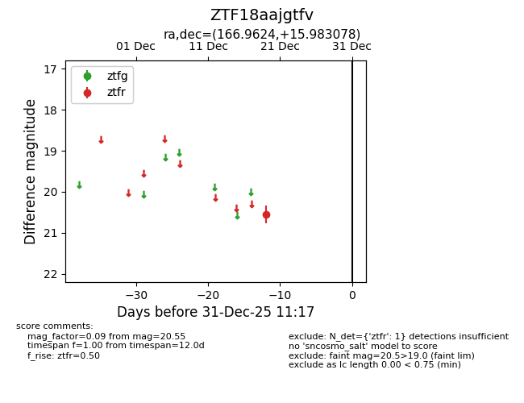
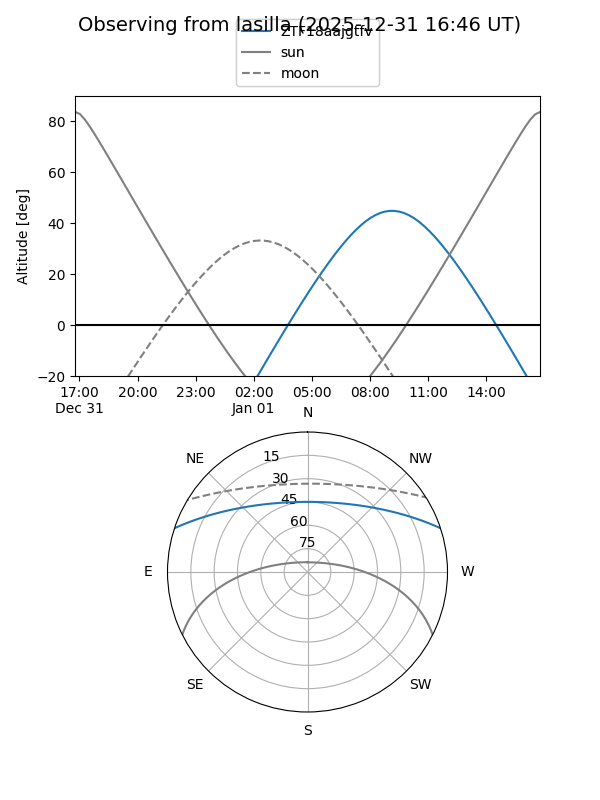
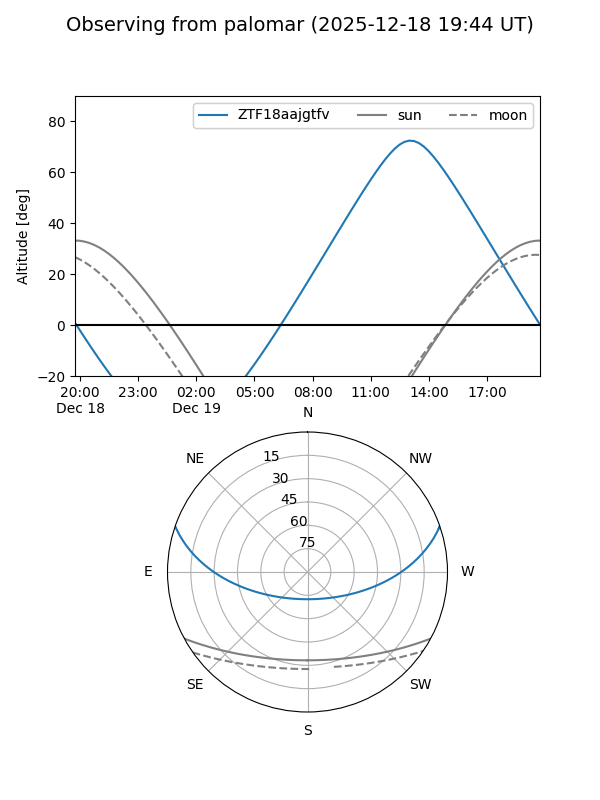

ZTF18aajgtfv
Target ZTF18aajgtfv at 2025-12-19 12:22
Aliases and brokers:
FINK: fink-portal.org/ZTF18aajgtfv
Lasair: lasair-ztf.lsst.ac.uk/objects/ZTF18aajgtfv
ALeRCE: alerce.online/object/ZTF18aajgtfv
alt names
ZTF18aajgtfv (ztf,fink_ztf)
Coordinates:
equatorial (ra, dec) = 166.9624,+15.98308
equatorial (HMS+DMS) = 11:07:50.98,+15:58:59.08
galactic (l, b) = (232.5036,+63.53707)
Flags:
Photometry:
last ztfr=20.55
1 ztfr detections
Lightcurve

Visibility


Additional plots